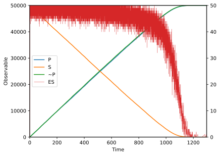
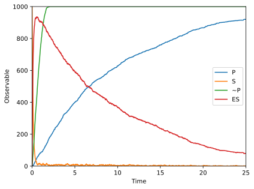
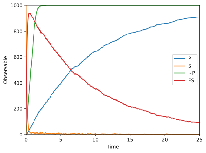

Michaelis-Menten¶
[1]:
import matplotlib.pyplot as plt
from pykappa import System
In this example, which is adapted from the Kappa language manual, we consider the standard Michaelis-Menten system and an approximation. The first model is precise in that an enzyme E binds a substrate S and subsequently phosphorylates it (site x{u} becomes x{p}). This model explicitly specifies a binding requirement for phosphorylation. The second model, in contrast, collapses the binding and phosphorylation step into a single
rule. The dynamics are instead specified by the rate term, which is based on the quasi steady-state approximation for Michaelis-Menten kinetics, where the rate of phosphorylation is
where \(k_2\) is a catalytic rate constant, \([S]\) is the concentration of free substrate, and \(E_t\) is the total enzyme concentration.
[2]:
kastr = """
%var: 'k1' 0.001
%var: 'k_1' 0.1
%var: 'k2' 1.0
%var: 'Km' ('k_1'+'k2')/'k1'
// Precise model
E(s[.]), S(e[.],x{u}) <-> E(s[1]), S(e[1],x{u}) @ 'k1', 'k_1'
E(s[1]), S(e[1],x{u}) -> E(s[.]), S(e[.],x{p}) @ 'k2'
%obs: 'P' |S(e[.],x{p})|
%obs: 'S' |S(e[.], x{u})|
%obs: 'ES' |E(s[1]), S(e[1],x{u})|
// Approximate model
_E(s[.]), _S(e[.],x{u}) -> _E(s[.]), _S(e[.],x{p}) @ 'k2'/('Km'+'~S')
%obs: '~S' |_S(e[.],x{u})|
%obs: '~P' |_S(e[.],x{p})|
"""
Note that \(E_t [S]\) has been omitted from the Kappa model since PyKappa already applies the rule at a rate exactly proportional to the number of embeddings \(E_t [S]\). (All enzymes are free in the approximate model.)
We now initialize this model with an excess of substrate, a requirement for the quasi steady-state approximation.
[3]:
qe_system = System.from_ka(kastr, seed=42)
qe_system.mixture.add("E(s[.])", 50)
qe_system.mixture.add("S(e[.], x{u})", 50000)
qe_system.mixture.add("_E(s[.])", 50)
qe_system.mixture.add("_S(e[.], x{u})", 50000)
while qe_system.reactivity:
qe_system.update()
Plotting these two models against each other demonstrates the reliability of the quasi steady-state approximation under appropriate conditions. Note that we add a separate axis for the complex ES; the scale differs from the other quantities by several orders of magnitude.
[4]:
fig = qe_system.monitor.plot(combined=True, observables=["P", "S", "~P"])
ax = fig.axes[0]
ax_twin = ax.twinx()
ax_twin.margins(0, 0)
ax_twin.plot(
qe_system.monitor.history["time"],
qe_system.monitor.history["ES"],
color="#d62728",
label="ES",
linewidth=0.5,
)
lines1, labels1 = ax.get_legend_handles_labels()
lines2, labels2 = ax_twin.get_legend_handles_labels()
ax.legend(lines1 + lines2, labels1 + labels2, loc="center left")
[4]:
<matplotlib.legend.Legend at 0x7f6b7e7f7e30>

Note that the green line (~P, the number of phosphorylated agents under a less detailed ruleset) closely tracks the blue line (P, the higher-fidelity model). This model breaks down when the quasi steady-state dynamics are not satisfied, which can occur under an overabundance of enzymes compared to substrates:
[5]:
nqe_system = System.from_ka(kastr, seed=42)
# disrupt the quasi-equilibrium
nqe_system["k2"] = 0.1
nqe_system.mixture.add("E(s[.])", 10000)
nqe_system.mixture.add("S(e[.], x{u})", 1000)
nqe_system.mixture.add("_E(s[.])", 10000)
nqe_system.mixture.add("_S(e[.], x{u})", 1000)
while nqe_system.time < 25:
nqe_system.update()
[6]:
nqe_system.monitor.plot(combined=True, observables=["P", "S", "~P", "ES"])
[6]:


Note that ~P no longer tracks the more correct estimate P.